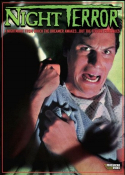

Country:United States, 91 minutes
Spoken languages:English
Genres:Fantasy, Horror
Director(s):Michael Weaver, Paul Howard
Writer(s):Paul Howard, Michael Weaver, David C. Lee
Video Codec:Unknown
Number: 2833


Certification:
Storyline:
A man is plagued by recurring nightmares, and when he wakes up he finds that the nightmares he just dreamed of keep coming true.
Cast:

Medium: Original DVD,
Loaned: No
Aspect ratio: Unknown